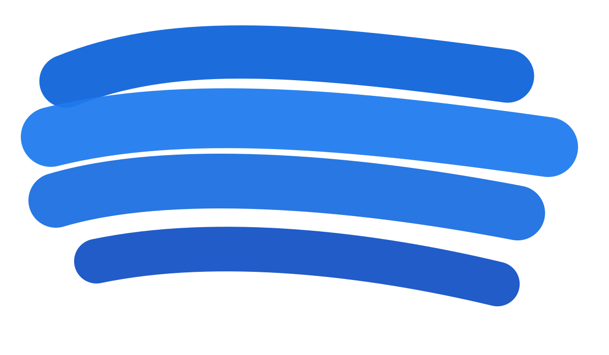
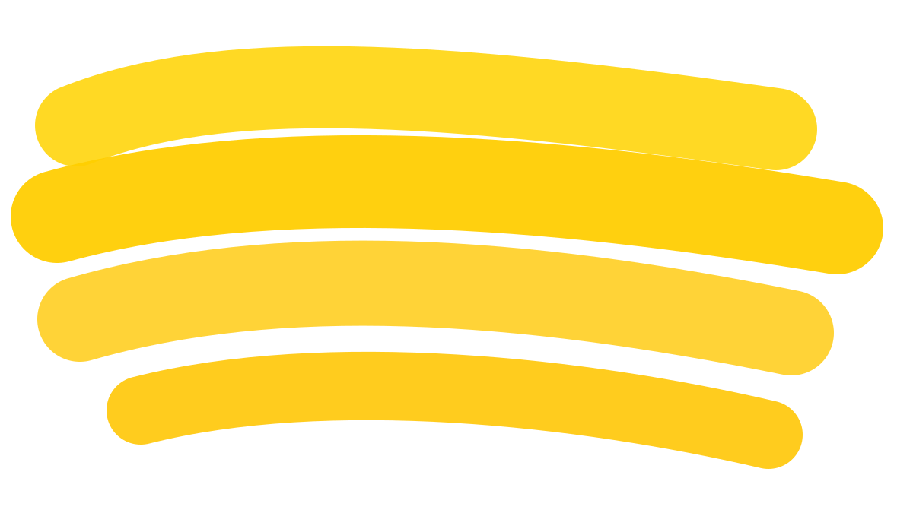
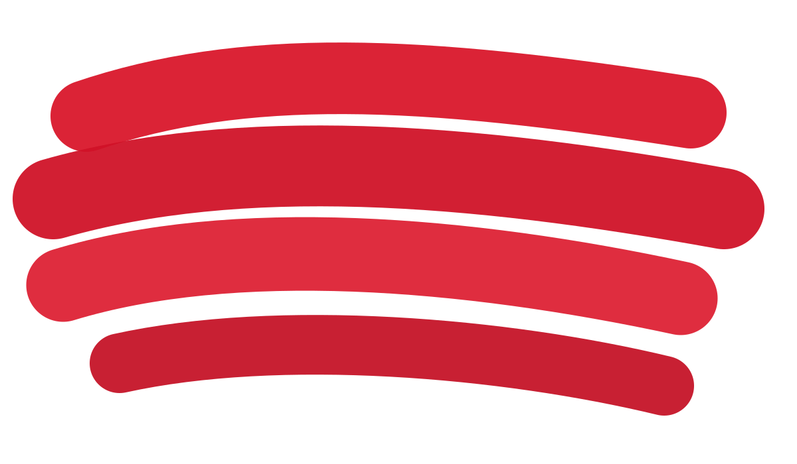

La Casita de Yeya Village
Página dedicada para todo lo relacionado a Village.
Cocina típica dominicana con casi 15 años de historia
La Casita de Yeya nació como una propuesta de comida criolla auténtica y hoy cuenta con tres locales en Punta Cana. Este Home resume la marca y te dirige a páginas individuales para cada sucursal.

Página dedicada para todo lo relacionado a Village.

Página independiente para la sucursal Downtown.

Página exclusiva para contenido de Los Corales.
Resumen
Cada local tiene su propio enlace y estructura de contenidos para construir información detallada sin mezclarlo todo en una sola página larga.
Detalles operativos, menú destacado y contenido específico de esta sucursal.
Ir a VillageSección independiente con información propia de Downtown.
Ir a DowntownPágina dedicada para enfoque turístico, ubicación y oferta local.
Ir a Los CoralesHistoria completa del restaurante, valores y evolución de la marca.
Ir a Nosotros